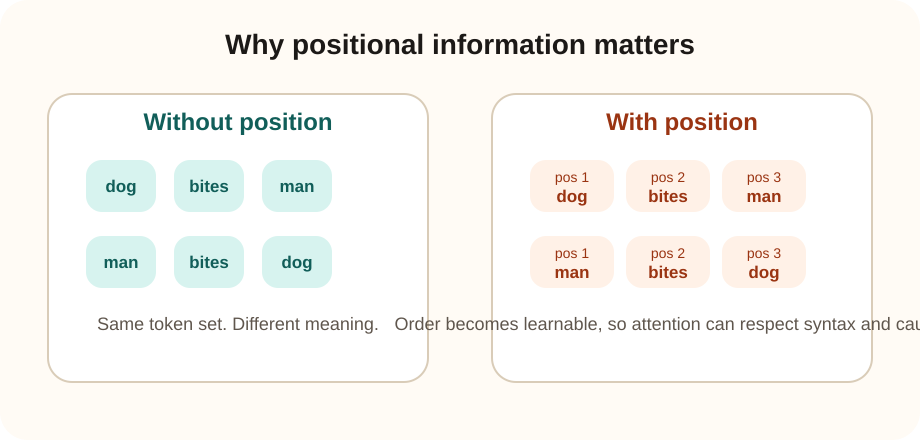

Core dependency
Why positional embeddings are important
Simple statement: self-attention can compare tokens by content, but without a positional signal it does not inherently know which token came first, second, or last.

What fails without position
If tokens are treated as an unordered bag, the model cannot reliably learn grammar, argument structure, local order, or causal order.
What position restores
Order, relative distance, and token index become learnable signals. This lets attention reason about who modifies what and what can depend on what.
| Method | Idea | Common use |
|---|---|---|
| Learned absolute embeddings | Learn one position vector per index. | Early BERT and GPT variants. |
| Sinusoidal encodings | Use fixed periodic functions to encode position. | The original Transformer paper. |
| Relative position methods | Focus on token-to-token distance, not just absolute slot. | Useful for length generalization and structured attention. |
| Rotary position embeddings | Rotate query and key vectors by position-dependent angles. | Widely used in modern decoder-only LLMs. |
Example: code generation
Consider the line: if x > 0 then print(x). The order matters. The model must understand that the condition appears before the action, and that closing tokens depend on earlier openings. Positional information is what lets the transformer track these structured relationships across the sequence.
GPT-specific implication
In decoder-only models, position and causal masking work together. Position says where a token is. The mask says which earlier positions are visible. Without both, autoregressive generation would be unreliable.
Design logic
Why positional encoding is necessary and what fails without it
Why we must inject position
- Attention compares content similarity, not sequence order, unless order is explicitly encoded.
- Syntax, scope, clause ordering, and program structure all depend on token position.
- Long-context models especially need a stable way to represent relative placement.
What other techniques fail at
- Ignoring position makes the model behave closer to a content-matching bag of tokens.
- A weak absolute-only scheme may generalize poorly beyond trained lengths.
- Relying on token identity alone cannot distinguish same-word, different-role occurrences.
Interview readiness
Questionnaire and scenarios
Why is self-attention called permutation-invariant without positional encoding?
Because the attention computation itself does not assign meaning to token order. If you permute tokens and permute their embeddings accordingly, the mechanism still works on content relations, not original sequence indices. Positional information breaks that symmetry.
Why are rotary or relative methods popular in modern LLMs?
Because they often preserve relative-distance information better and tend to extrapolate more gracefully to longer contexts than simple learned absolute embeddings.
Your model understands local phrases but makes ordering mistakes in long code blocks. What should you suspect?
Suspect positional handling and long-range attention. Code is highly order-sensitive, so failures on bracket pairing, argument order, or block structure often point to weak positional generalization.
An interviewer asks: “If attention is global, why is position still needed?”
Global visibility tells the model what tokens exist, not how they are ordered. Language meaning depends on order, so visibility without positional structure is insufficient.